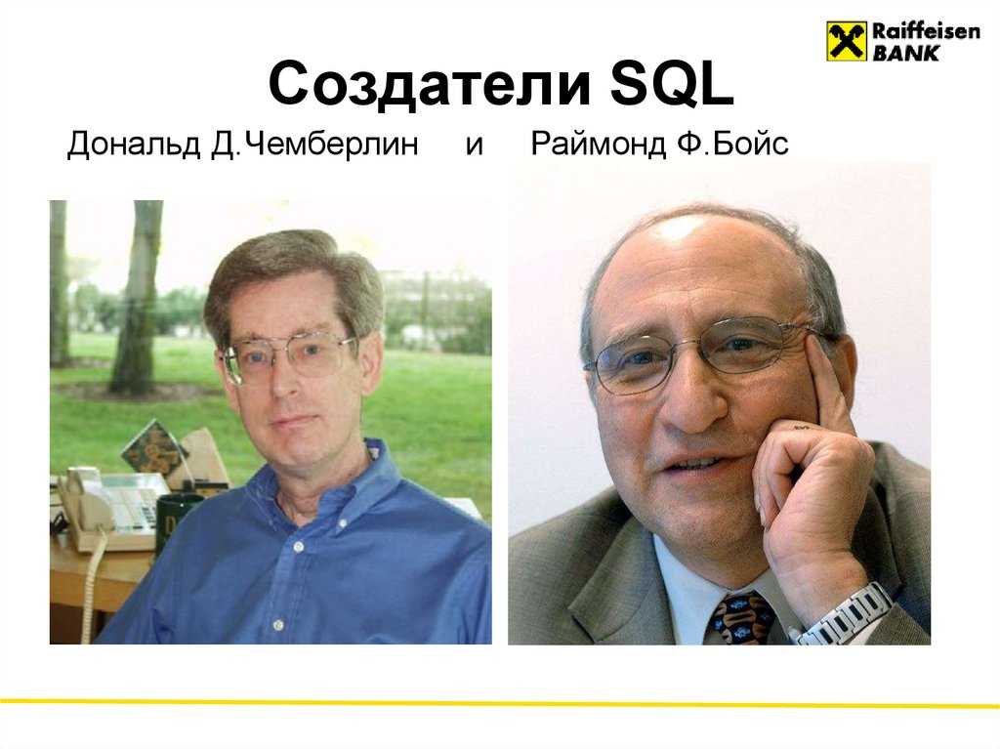
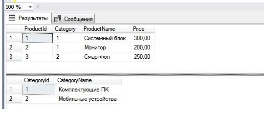

SQL (от англ. Structured Query Language — «язык структурированных запросов») — декларативный язык программирования, применяемый для создания, модификации и управления данными в реляционной базе данных, управляемой соответствующей системой управления базами данных.
Является, прежде всего, информационно-логическим языком, предназначенным для описания, изменения и извлечения данных, хранимых в реляционных базах данных. В общем случае SQL (без ряда современных расширений) считается языком программирования неполным по Тьюрингу, но вместе с тем стандарт языка спецификацией SQL/PSM предусматривает возможность его процедурных расширений.
Изначально SQL был основным способом работы пользователя с базой данных и позволял выполнять следующий набор операций:
| Дональд Чемберлин и Раймонд Бойс начали работу над языком реляционных баз данных после того, как узнали о реляционной модели от Э. Кодда, встретившись с ним на симпозиуме в Нью-Йорке в 1972 году.Авторы были впечатлены выразительностью и компактностью реляционной алгебры и реляционного исчисления, предложенных Э. Коддом, для представления сложных запросов. Кодд использовал символическую запись с математическими обозначениями операций, но Чемберлин и Бойс захотели спроектировать язык так, чтобы им мог воспользоваться ЛЮБОЙ ПОЛЬЗОВАТЕЛЬ, даже не имеющий навыков программирования и знаний математики. После симпозиума Кодда, Чемберлин и Бойс провели следующий год в экспериментах над дизайном языка. Первой их попыткой был язык SQUARE (Specifying Queries in A Relational Environment), но он был сложен в |
 |
практическом использовании из-за математической нотации с верхними и нижними индексами. В 1973 году, Чемберлин и Бойс начали работу над совершенно новым языком, который был назван SEQUEL (от Structured English QUEry Language, «английский язык структурированных запросов»). Авторы надеялись, что после небольшой практики даже пользователи-неспециалисты (например, бухгалтеры, инженеры, архитекторы, градостроители) смогут читать запросы так, словно последние написаны на обычном английском языке. Язык был назван «декларативным», поскольку он описывал желаемый результат, а не детальный план поиска этой информации. Предполагалось, что переводом декларативного запроса в детальный план исполнения будет заниматься специальный оптимизирующий компилятор. |
Первая общедоступная статья о SEQUEL была опубликована в 1974 году. Через месяц после этого Рей Бойс скончался. После его смерти язык SEQUEL продолжил развитие как часть проекта IBM System R. Пэт Селинджер (Pat Selinger) занималась разработкой стоимостного оптимизатора (cost-based optimizer), Рэймонд Лори (Raymond Lorie) занимался компилятором запросов.
В 1977 году авторы получили письмо от юриста британской авиастроительной группы компаний Hawker Siddeley, уведомляющее, что этой компании принадлежит торговая марка «SEQUEL». Было принято решение сократить название языка до SQL (от Structured Query Language, «язык структурированных запросов»). Тем не менее, первоначальное название SEQUEL повлияло на современное произношение аббревиатуры SQL.
SQL был не единственным языком подобного назначения. В Калифорнийском Университете Беркли была разработана некоммерческая СУБД Ingres, которая являлась реляционной СУБД, но использовала свой собственный язык QUEL, который, не выдержал конкуренции по количеству поддерживающих его СУБД по сравнению с языком SQL. В качестве альтернативного подхода для обеспечения пользовательского доступа к базам данных также рассматривался появившийся в 1970-е годы метод QBE, впоследствии в видоизменённой форме появившийся в ряде интегрированных сред управления данными, но так и не заменивший, а лишь дополнивший SQL.
Пять фактов о базе данных Model в SQL Server
Язык SQL представляет собой совокупность операторов, инструкций, вычисляемых функций.Согласно общепринятому стилю программирования, операторы (и другие зарезервированные слова) в SQL обычно рекомендуется писать прописными буквами.
Операторы SQL делятся на:
Чтобы работать с базами данных при помощи SQL, используют систему управления базами данных, или СУБД — посредник между пользователем и сервером, где находятся таблицы. СУБД представляют собой комплекс ПО, которое позволяет создавать базы данных и управлять ими. СУБД бывают бесплатными и коммерческими — например, MySQL, Microsoft SQL Server, SQLite, Oracle, Ingres.
| Система | Типа доступа | Написание на языке | Где используется | |
|---|---|---|---|---|
| 1 | PostgreSQL | Открытый | C | Skype, TripAdvisor, Яндекс, Почта, яAvito |
| 2 | My SQL | Открытый | C; C++ | GitHub, FaceBook, Twitter, YouTube |
| 3 | SQLite | Открытый | C | Adobe Photoshop Lightroom, Mozilla Firefox, Opera, Viber |
| 4 | Oracle | Платный | C; C++; Java | МТС, Tele2,Банк "Открытие", ВТБ |
| 5 | Google Cloud Spanner | Общедоступный | C; C++ | PayPal, P&G, Lucille Games |
SQL также поддерживает операции соединения таблиц, которые позволяют объединять данные из нескольких таблиц в один результат. SQL также поддерживает агрегатные функции, такие как SUM, AVG, MAX, MIN, которые позволяют вычислять статистические данные на основе выбранных данных.
SQL имеет стандарт ANSI SQL, который определяет общие правила и синтаксис языка. Однако, многие базы данных имеют свои собственные диалекты SQL, которые могут отличаться от стандарта ANSI SQL.
SQL также может быть использован для
создания и управления пользователями и их правами доступа к базе данных. Это позволяет ограничить доступ к конфиденциальным данным и обеспечить безопасность базы данных.
В целом, SQL является мощным инструментом для управления и обработки данных в реляционных базах данных. Его простота и широкое распространение делают его важным языком программирования для любого, кто работает с базами данных.
Преимущества:
Недостатки:

—Создание таблицы Goods
CREATE TABLE Goods (
ProductId INT IDENTITY (1,1) NOT NULL CONSTRAINT PK_ProductId PRIMARY KEY,
Category INT NOT NULL,
ProductName VARCHAR (100) NOT NULL,
Price MONEY NULL,
);
GO
—Создание таблицы Categories
CREATE TABLE Categories (
CategoryId INT IDENTITY (1,1) NOT NULL CONSTRAINT PK_CategoryId PRIMARY KEY,
CategoryName VARCHAR (100) NOT NULL
);
—Добавление строк в таблицу Categories
INSERT INTO Categories(CategoryName)
VALUES ( 'Комплектующие ПК' ),
( 'Мобильные устройства' );
GO
—Добавление строк в таблицу Goods
INSERT INTO Goods(Category, ProductName, Price)
VALUES (1, 'Системный блок' , 300),
(1, 'Монитор' , 200),
(2, 'Смартфон' , 250);
GO
—Выборка данных
SELECT * FROM Goods;
SELECT * FROM Categories;